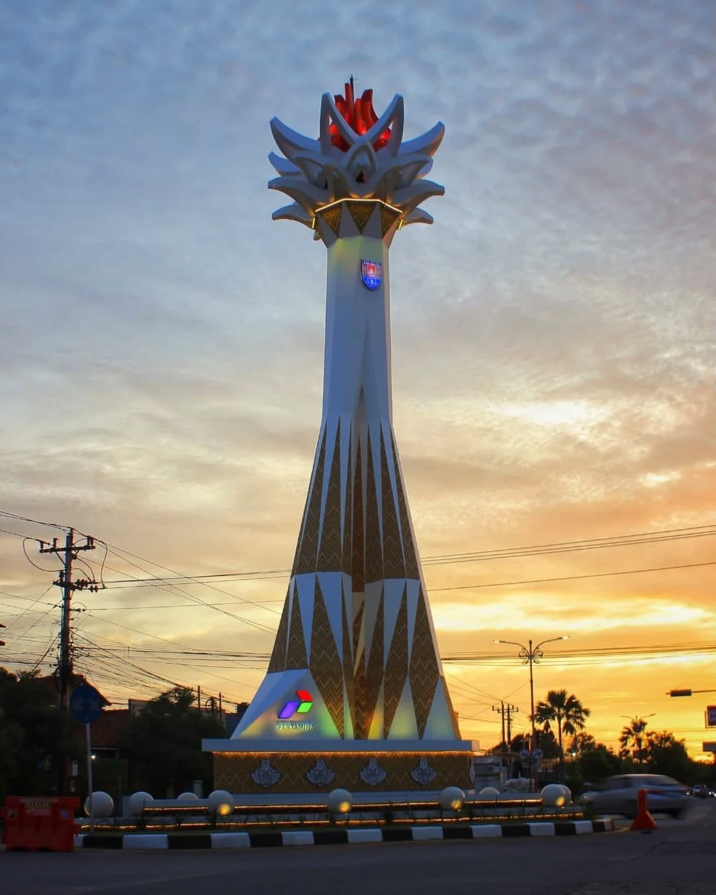

Asal & Keunikan Daerah

Saya berasal dari Cilacap, sebuah daerah pesisir di selatan Pulau Jawa yang dikenal sebagai kota industri sekaligus wilayah dengan kekayaan budaya dan alam yang beragam. Cilacap memiliki ikon alam berupa Pantai Teluk Penyu dan Benteng Pendem yang menjadi saksi sejarah sekaligus daya tarik wisata daerah.
Keunikan Cilacap terletak pada perpaduan kehidupan masyarakat pesisir yang sederhana, budaya gotong royong yang masih kuat, serta keberagaman masyarakat yang hidup berdampingan. Lingkungan tersebut membentuk karakter saya menjadi pribadi yang lebih adaptif, pekerja keras, dan menghargai proses dalam belajar maupun mengajar.
Tumbuh di daerah dengan latar belakang masyarakat yang beragam membuat saya memahami bahwa setiap peserta didik memiliki potensi dan cara belajar yang berbeda. Hal inilah yang menjadi motivasi saya untuk menjadi guru yang tidak hanya menyampaikan materi, tetapi juga mampu memahami kebutuhan siswa, menciptakan pembelajaran yang bermakna, dan memberikan dampak positif bagi lingkungan sekitar.